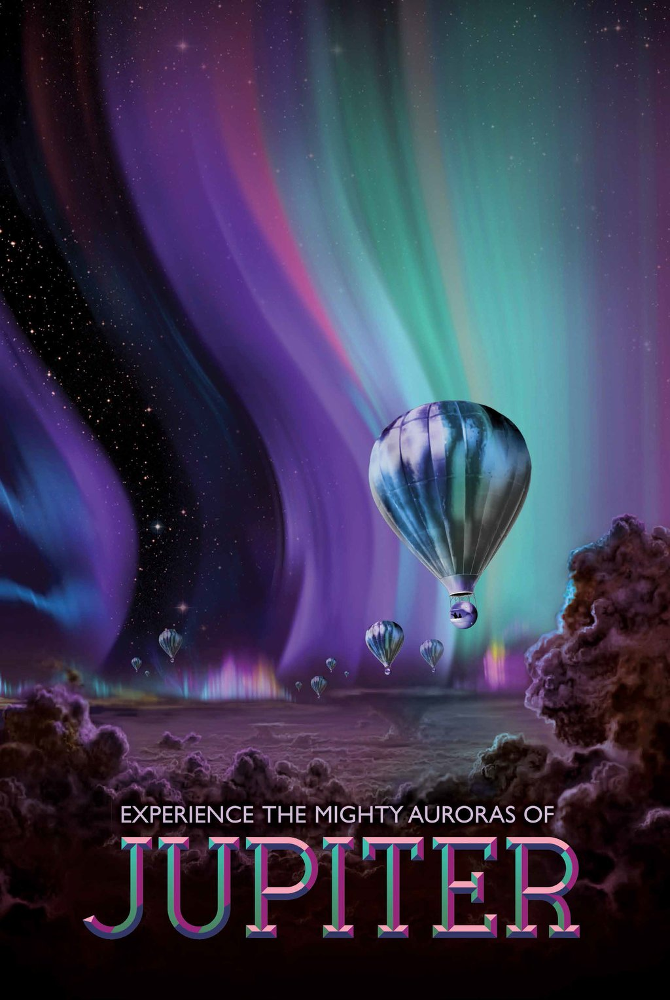

The Jovian cloudscape boasts the most spectacular light show in the solar system, with
northern and southern lights to dazzle even the most jaded space traveler. Jupiter's auroras are
hundreds of times more powerful than Earth's, and they form a glowing ring around each pole that's
bigger than our home planet. Revolving outside this auroral oval are the glowing, electric
“footprints” of Jupiter's three largest moons. NASA's Juno mission will observe Jupiter's auroras
from above the polar regions, studying them in a way never before possible.